Матеріали Дентсплай Сірона · журнал «ДентАрт» 2020 №3
Фіксація непрямих реставрацій
Cementation of Indirect Restorations
У сучасному суспільстві усмішка має велике соціальне значення для людини. Красива усмішка — це не лише свідчення здоров'я і данина моді, а й маркер успіху й статусу в суспільстві. При зустрічі з незнайомою людиною в 47% випадків люди передусім звертають увагу на усмішку, приблизно в 31% — на очі, 11% — на запах і близько 11% припадає на волосся та одяг (www.dentistree.in). Тому не дивно, що послуги естетичної стоматології сьогодні дуже затребувані, особливо установка непрямих керамічних реставрацій — вінірів, вкладок і накладок.
Ці конструкції також затребувані при тотальній реабілітації зубних рядів з патологічним стиранням і дисфункцією СНЩС, коли завершальним етапом лікування є відновлення зубів до потрібної форми з певним взаємовідношенням. Сучасний рівень розвитку дозволяє «спланувати» усмішку пацієнта і навіть провести «тест-драйв» прототипу майбутніх зубів. Існують різні способи виготовлення керамічних реставрацій — пошарового нанесення, пресування і фрезерування. Одним з важливих і дуже копітких фінальних етапів є етап фіксації.
Вибір цементу і виду фіксації
Вибір фіксаційного цементу і виду фіксації залежить від початкової клінічної ситуації, виду реставрації, матеріалу виготовлення та властивостей фіксаційного матеріалу. Виділяють два види фіксації — адгезивна, з використанням адгезивних систем і спеціальних композитних цементів або фотокомпозитів, і неадгезивна (цементна). Використання склоіономерних цементів рекомендується для фіксації повних анатомічних металевих, металокерамічних і суцільнокерамічних коронок з гарною анатомічною ретенцією, тобто коли висота кукси препарованого зуба не менше 4 мм і конусність < 10°. Для фіксації керамічних накладок, вкладок, вінірів та коронок з неретенційним типом препарування (висота кукси < 4 мм і конусність > 10°) потрібне використання спеціальних композитних цементів з адгезивними системами (фото 1).
Використання склоіономерів для фіксації передбачає хімічну адгезію, для посилення якої вкрай потрібна обробка дентину спеціальними кондиціонерами, що містять слабкі органічні кислоти. Кондиціонер при нанесенні на дентин прибирає власне змащений шар на його поверхні, при цьому не видаляючи його пробки і не викликаючи демінералізацію дентину, а кальцій, що залишився в дентині, є субстратом для утворення хімічного зв'язку з цементом (фото 2). Склоіономерні цементи не мають високих естетичних властивостей, у них не дуже висока сила зчеплення, але вони мають виражену вологостійкість. Ці властивості зумовлюють показання до застосування цих матеріалів — фіксація коронок з ретенційним типом препарування в естетично не важливих зонах, а також світлонепроникних конструкцій. Гарна вологостійкість — це властивість, яка дозволяє використовувати склоіономери в ситуаціях, коли є під'ясенний вид препарування з глибоким зануренням краю коронки під ясна, де неможливо добитися ідеальної сухості робочого поля (фото 3).
Адгезивна фіксація непрямих реставрацій міцніша, дозволяє фіксувати конструкції без будь-яких анатомічних ретенційних пунктів у випадках з неретенційним препаруванням, але більш складна і копітка в технічному виконанні.
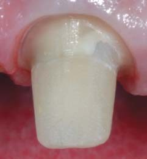
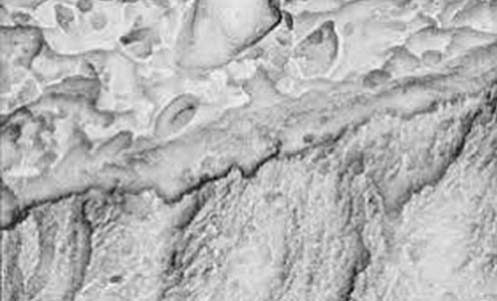
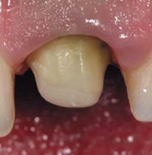
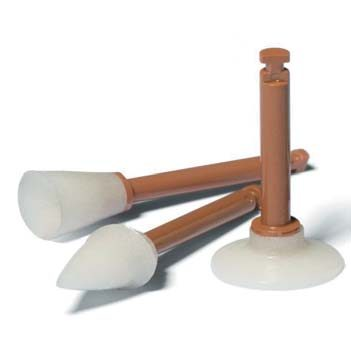
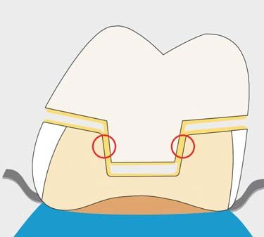
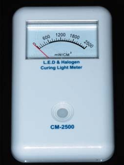
Підготовка перед цементуванням конструкцій
Однак незалежно від способу цементації, на успіх остаточної фіксації впливають такі чинники: змочуваність поверхонь, їх конгруентність і товщина фіксаційного матеріалу. Чим менша товщина фіксаційного цементу, тим міцніша й довговічніша фіксація, а мінімальну товщину цементу можна забезпечити максимальною відповідністю поверхонь, що склеюються, тобто їх конгруентністю. Поліпшити змочуваність поверхні і, отже, посилити адгезію можна шляхом шліфування препарованих поверхонь борами із зернистістю 30 мкм, а також дисками і головками полірувальної системи Enhance (фото 4). Така попередня підготовка в результаті дозволяє забезпечити умови для надійного зв'язку між зубом і склеюючим композитом.
Для фіксації непрямих керамічних реставрацій застосовують як світлозатверджувальні композити, так і композитні цементи подвійного способу затвердіння з відповідними адгезивними системами. Керамічні реставрації, які мають товщину 1 мм і більше, а тим більше опакові, перешкоджають проникненню світла полімеризаційної лампи для повноцінного затвердіння композиту та адгезивної системи. Цей фактор є основним при виборі фіксаційного матеріалу на користь композитів подвійного способу затвердіння, які здатні самополімеризуватися за недостатньої кількості світлової енергії. Полімеризація адгезивної системи на поверхні зуба і реставрації перед її установкою може призвести до порушення її позиціонування і зміни зовнішнього вигляду, а також оклюзійно-артикуляційних співвідношень (рис. 1). Щоб уникнути такого ускладнення, рекомендується при фіксації товстих реставрацій використовувати адгезивні системи подвійного способу затвердіння, котрі, як і композити подвійного способу затвердіння, здатні до самополімеризації в умовах недостатньої кількості світла або за його відсутності.
- світлозатверджувальні адгезивні системи і композити повинні отримувати достатню кількість енергії у вигляді світла, тому товщина керамічної реставрації не повинна перешкоджати його проникненню;
- при значній втраті потужності світлового потоку збільшення часу полімеризації не компенсує його втрату;
- у разі фіксації товстих реставрацій слід використовувати композитні цементи подвійного способу затвердіння, які здатні до самополімеризації в умовах дефіциту світла або за його відсутності («темна» фаза полімеризації);
- бажано використовувати рекомендовані комбінації адгезивних систем і композитних цементів для їх сумісності.
Також для повноцінної полімеризації потрібно, щоб лампа полімеризації забезпечувала потужність, необхідну для максимальної конверсії композиту. Вимоги до потужності лампи завжди вказують виробники композитних матеріалів, і їх слід суворо дотримуватися, оскільки недополімеризований композит не має максимальних характеристик міцності, це може призводити до розцементування конструкцій і зміни кольору, що, у свою чергу, призводить до зміни кольору вже зафіксованої реставрації. Не слід забувати, що з плином часу потужність усіх видів полімеризаційних ламп знижується, тому потрібен періодичний контроль їх потужності за допомогою спеціальних приладів (фото 5).
Цементи для фіксації
Сьогодні на ринку величезна кількість цементів для фіксації непрямих реставрацій. Компанія Dentsply Sirona випускає для цих цілей лінійку композитних цементів Calibra — для різних клінічних ситуацій і способів фіксації.
Calibra Universal — самоадгезивний композитний цемент подвійного способу затвердіння. Цей матеріал являє собою поєднання композитного матеріалу із самопротравлюючим адгезивом, що дозволяє йому постійно фіксувати металеві, металокерамічні та керамічні коронки, вкладки з ретенційним типом препарування, а також скловолоконні та металеві штифтові конструкції без застосування окремої адгезивної системи (фото 6). Протокол фіксації ортопедичних конструкцій за допомогою Calibra Universal досить простий і не вимагає спеціальної обробки внутрішньої поверхні реставрацій, але металеві, металокерамічні та цирконієві конструкції в лабораторії бажано обробити піскоструминно за допомогою оксиду алюмінію. Перед фіксацією внутрішні поверхні цементованих конструкцій повинні бути чистими і сухими. Поверхню зуба перед фіксацією слід очистити від тимчасового цементу, знежирити і висушити, при цьому важливо не пересушити ділянки, де в процесі препарування відкрився дентин. Не рекомендується протравлювати поверхню зуба при використанні цього цементу.
При виборі матеріалу для фіксації суцільнокерамічних коронок в естетично важливих зонах між Calibra Universal та склоіономерними цементами перевагу слід надати, на нашу думку, композитному цементу. Це зумовлено вищими естетичними характеристиками і ширшою гамою кольорів цього матеріалу в порівнянні зі склоіономерами. Особливо це актуально, коли на передніх зубах застосовуються різні види реставрацій, наприклад коронки і вініри. Керамічні вініри слід фіксувати адгезивно, з використанням композитних цементів, наприклад Calibra Ceram. У такій ситуації комбінація Calibra Universal (для фіксації коронок в неадгезивній техніці, наприклад, на цирконієвих абатментах) і Calibra Ceram (для фіксації вінірів) є ідеальною, бо вони мають однакові відтінки, що дозволяє отримати однаковий відтінок реставрації після фіксації (фото 7, 8).
Адгезивна фіксація неретенційних керамічних реставрацій більш копітка, ніж цементна. Класичний протокол адгезивної фіксації передбачає використання композитних цементів подвійного способу затвердіння з адгезивними системами подвійного способу затвердіння. Зазвичай для того, щоб адгезивна система мала можливість полімеризуватися без доступу світла («темна» фаза полімеризації) і була сумісна з композитним цементом, до неї раніше додавали активатор хімічного способу затвердіння. Це дозволяло наносити суміш «адгезивна система — активатор хімічної полімеризації» на адгезивні поверхні зубів і реставрацій, не полімеризувати її, вносити фіксаційний композитний цемент і лише після позиціонування конструкції робити полімеризацію. Такий спосіб фіксації дозволяв уникнути неточного позиціонування, яке може виникнути в тому випадку, якщо попередньо полімеризувати адгезивну систему, а чим більша товщина адгезивного шару, тим більшою буде відстань між конструкцією, що фіксується, і тканинами зуба (рис. 1).
На поверхні діоксиду цирконію неможливо створити мікрошорсткість шляхом протравлювання, тому коронки на його основі не піддаються класичним способам адгезивної підготовки. Матеріали вибору для їх фіксації — склоіономерні цементи або самоадгезивні композитні цементи, але для створення мікрошорсткості внутрішня поверхня коронок повинна бути піддана мікроабразивній обробці в зуботехнічній лабораторії піском оксиду алюмінію зернистістю 50 мкм під тиском.
Calibra Ceram — адгезивний цемент, що поєднує властивості самозатвердіння, подвійного затвердіння і світлозатвердіння (фото 9). Цей матеріал призначений для використання із сумісною дентино-емалевою адгезивною системою, зокрема Prime&Bond universal, для світлопроникних реставрацій без використання активатора хімічного способу затвердіння (фото 10). Цей цемент дозволяє фіксувати всі види непрямих реставрацій — вкладки, накладки, коронки з ретенційним і неретенційним типом препарування, а також скловолоконні штифти. При використанні цього цементу потрібно зробити адгезивну підготовку твердих тканин зуба і самих реставрацій.
Сучасна реставраційна стоматологія передбачає мінімальну редукцію твердих тканин, при якій, як правило, втручання обмежується емаллю. У такому випадку складнощів з адгезією не виникає, як і під час виготовлення прямих реставрацій. У випадках, коли зуб має вестибулярний або оральний нахил, повернутий по осі, препарування може супроводжуватися розкриттям дентину, іноді навіть досить великих ділянок. Використовуючи універсальну систему Prime&Bond universal у такій ситуації, адгезивну підготовку твердих тканин можна робити або в техніці тотального протравлювання, або в техніці селективного (вибіркового) протравлювання. Детально ці техніки описані в журналі «ДентАрт» № 3 за 2019 рік.
Протокол підготовки реставрацій із польовошпатної кераміки
Керамічні реставрації з польовошпатної кераміки (сьогодні використовуються все рідше), або так званої прес-кераміки, потрібно обробити у відповідності з рекомендаціями виробника чи зуботехнічної лабораторії. Ось класичний протокол підготовки таких реставрацій товщиною до 2,5 мм:
- обробка внутрішньої поверхні реставрації 4,5–10% розчином плавикової кислоти (HF) протягом 30–60 с (фото 11);
- змивання, висушування струменем повітря. Після висушування оброблена поверхня реставрації стає матовою, це нормально (фото 12);
- опціонально — обробка поверхні 34–37% розчином ортофосфорної кислоти протягом 60 с (фото 13);
- змивання, висушування;
- нанесення силану на 60 с (фото 14);
- нанесення адгезивної системи Prime&Bond universal (фото 15).
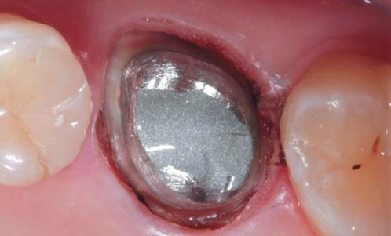
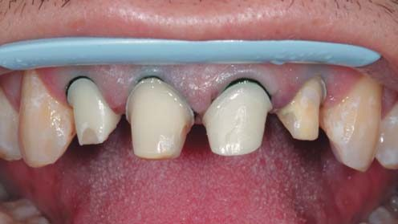
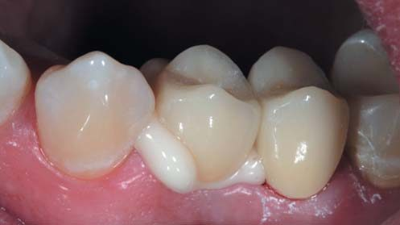
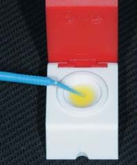
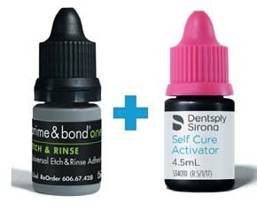
Після нанесення адгезивної системи на поверхню зуба і внутрішню поверхню реставрації її не потрібно полімеризувати, щоб не створити додаткову товщину за рахунок адгезивної плівки. Після розподілення адгезиву потоком повітря на внутрішню поверхню реставрації за допомогою наконечника для змішування вноситься Calibra Ceram, реставрація встановлюється на місце і перевіряється правильність посадки. Потім протягом 3–4 с робиться короткострокова полімеризація витіснених надлишків цементу. Відмітною особливістю композитних цементів Calibra є подовжена гелева фаза в процесі полімеризації, що дозволяє досить легко видалити надлишки цементу за допомогою гладилки чи іншого зручного інструмента (фото 16). Надлишки цементу залишатимуться в гелеподібному стані протягом 45 секунд після впливу світла. При цьому слід захистити реставрацію від зміщення до моменту остаточної полімеризації. У міжзубних проміжках надлишки цементу потрібно видалити за допомогою зубних флосів. Після того, як видалення надлишків цементу буде завершено, слід провести світлозатвердження через реставрацію з вестибулярної, язичної, жувальної поверхонь, по 20 с в кожному напрямку. Мінімальна потужність світлового потоку має бути 550 мВт/см². Після остаточної полімеризації слід ще раз перевірити і відкоригувати оклюзійні та артикуляційні співвідношення, а потім провести полірування. У разі фіксації накладок і вінірів ця корекція може бути зроблена лише після їх фіксації.
З Calibra Ceram також можна використовувати адгезив Prime&Bond one Etch&Rinse, але тільки в поєднанні з Self Cure Activator. Протокол фіксації аналогічний описаному вище, тільки перед нанесенням на тканини зуба і поверхню реставрації ці компоненти слід змішати протягом 2-х секунд в палетці CliXdish (фото 17). Це єдина комбінація, яка дозволяє провести фіксацію реставрації без світлового компонента полімеризації при використанні композитного цементу Calibra Ceram. За такого способу фіксації після позиціонування реставрації слід забезпечити її нерухомість. Через 1–2 хвилини Calibra Ceram досягає гелеподібної фази, яка дозволяє видалити надлишки цементу без особливих зусиль. Через 5 хвилин після установки реставрації (протягом цього часу цемент остаточно твердне) можна робити контроль оклюзії та артикуляції, за необхідності — пришліфовування і полірування.
Протокол застосування Calibra Veneer
Calibra Veneer — естетичний композитний світлозатверджувальний цемент для фіксації тонких керамічних вінірів, який сумісний з багатьма світлозатверджувальними дентино-емалевими адгезивними системами (фото 18). Після зняття тимчасової реставрації слід очистити поверхню зуба від залишків тимчасового фіксаційного матеріалу. Після перевірки відповідності реставрації провадиться адгезивна підготовка конструкції (відповідно до рекомендацій виробника) і адгезивна підготовка твердих тканин зуба в техніці, яку рекомендує виробник і вважає кращою лікар. При цьому, щоб уникнути утворення деякої товщини адгезивного шару на поверхні конструкції і тканин зуба, адгезивну систему рекомендується не полімеризувати. Після нанесення на поверхні її потрібно стоншити потоком повітря, потім внести Calibra Veneer відповідного відтінку, позиціонувати конструкцію на зубі, видалити великі надлишки цементу і зробити засвічування. Спочатку слід провести короткочасне засвічування (5–10 с) гінгівальної частини з метою первинної фіксації реставрації, потім остаточно видалити надлишки матеріалу і далі провести остаточну полімеризацію з усіх напрямків, з кожного по 20 с. Вимоги до полімеризаційної лампи такі ж, як і для цементів Calibra Universal та Calibra Ceram. Після цього обов'язково слід зробити оклюзійну, артикуляційну перевірку, в разі потреби — корекцію, шліфування та полірування.
Оскільки цей композит використовується для фіксації тонких керамічних реставрацій, слід враховувати, що його колір може впливати на остаточний зовнішній вигляд зуба. Для того, щоб остаточний результат відповідав очікуванням стоматолога і пацієнта, Calibra Veneer (а також інші цементи сімейства Calibra) випускаються в кількох відтінках: Light, Medium, Transparent, Opaque, Bleach. Таких самих відтінків випускаються і примірювальні пасти, які використовуються для підбору найбільш відповідного відтінку фіксаційного матеріалу (фото 19). Примірювальні пасти видавлюють зі шприца безпосередньо на внутрішню поверхню реставрацій, які позиціонуються на зубі, надлишки легко видаляються змоченою ватною кулькою або струменем води, полімеризація не потрібна. Після підбору потрібного відтінку, демонстрації реставрацій пацієнтові у ротовій порожнині та отримання згоди на фіксацію вони легко знімаються, а надлишки примірювальної пасти легко видаляються з керамічної реставрації і поверхні зуба струменем води з водо-повітряного пістолета. Після цього переходять до етапу ізоляції та фіксації конструкцій.
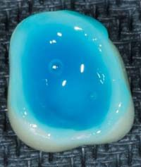
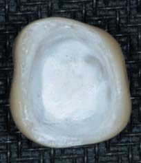
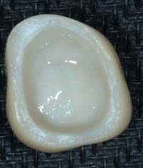
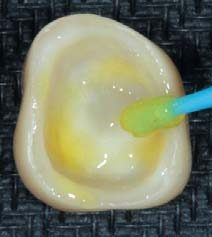
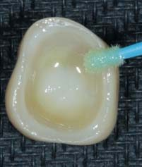
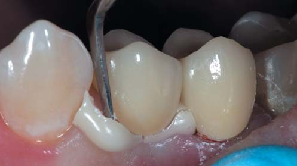
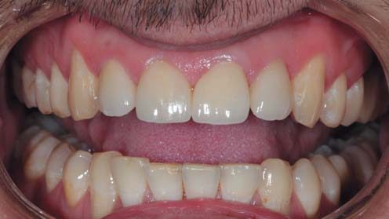
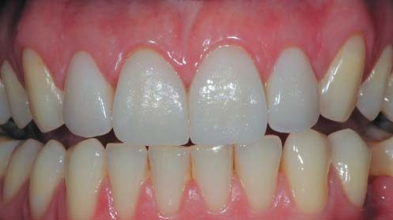
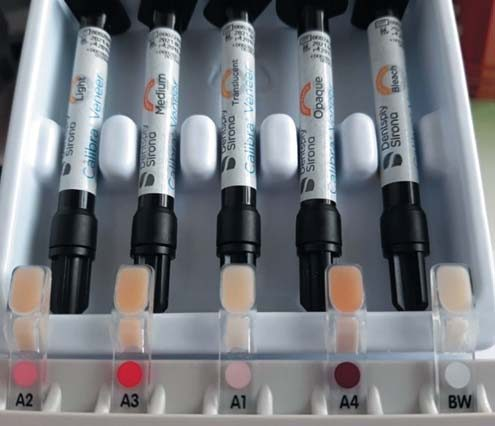
Клінічні приклади
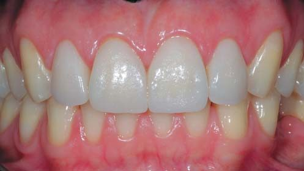
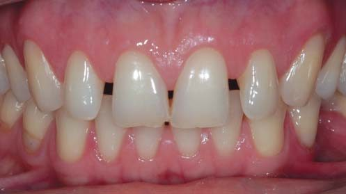
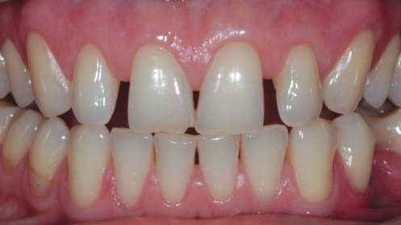
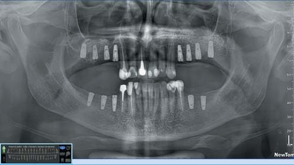
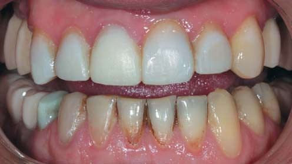

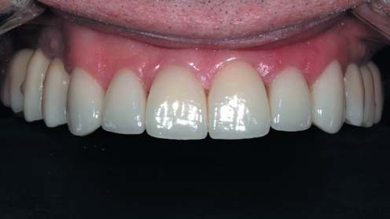
Висновки
Таким чином, фіксація непрямих реставрацій — досить відповідальний і копіткий процес, який вимагає найсуворішого дотримання всіх етапів у відповідності з вимогами виробників матеріалів виготовлення та фіксаційних матеріалів. Правильний вибір потрібних матеріалів на цьому етапі є запорукою успішного функціонування реставрацій протягом тривалого часу з мінімальною кількістю ускладнень і максимальною естетикою.
Література
- Paula Pontes Garcia, Rogerio Goulart da Costa, Murilo Calgaro and other. Digital smile design and mock-up technique for esthetic treatment planning with porcelain laminate veneers. Journal of Conservative Dentistry. 2018 Jul-Aug; 21(4): 455-458.
- Reshad M., Cascione D., Magne P. Diagnostic mock-ups as an objective tool for predictable outcomes with porcelain laminate veneers in esthetically demanding patients: A clinical report. Journal of Prosthetic Dentistry. 2008;99:333-339.
- Sharanbir K. Sidhu, John W. Nicholson. A Review of Glass-Ionomer Cements for Clinical Dentistry. Journal of Functional Biomaterials. 2016 Sep; 7(3): 16.
- Van Meerbeek B., Yoshida Y., Inoue S., De Munck J., van Landuyt K., Lambrechts P. Glass-ionomer adhesion: The mechanisms at the interface. J. Dent. 2006;34:615–617.
- Cristian Abad-Coronel, Belen Naranjo, Pamela Valdiviezo. Adhesive Systems Used in Indirect Restorations Cementation: Review of the Literature. Dentistry Journal (Basel). 2019 Sep; 7(3): 71.
- Загородний В. Доадгезивная подготовка твердых тканей зуба. Часть 1: методы подготовки эмали // ДентАрт. — 2015. — № 4. — С. 21-26.
- Загородний В. Доадгезивная подготовка твердых тканей зуба. Часть 2: Дентин // ДентАрт. — 2016. — № 1. — С. 6-11.
- Hoon-Sang Chang. Light curing of dual cure resin cement: Restorative Dentistry and Endodontics. 2013 Nov; 38(4): 266-267.
- Tanoue N., Koishi Y., Atsuta M., Matsumura H. Properties of dual-curable luting composites polymerized with single and dual curing modes. Journal of Oral Rehabilitation, 2003, vol. 30, no. 10, pp. 1015-1021.
- Pascon F. M. In-Depth Polymerization of a Self-Adhesive DualCured Resin Cement: Operative Dentistry, 2012, 37-2, 188-194.
- Radovic I., Monticelli F., Goracci C., Vulieevic Z. R., Ferrari M. Adhesive resin cements: a literature review. Journal of Adhesive Dentistry, 2008, 10(4): 251-258.
- Mario Alovisia, Nicola Scottia, Allegra Combac, Elena Manzon. Influence of polymerization time on properties of dual-curing cements in combination with high translucency monolithic zirconia: Journal of Prostodontics Research, 2018, 62: 468-472.
- Князева М. А. Виды стоматологических фотополимеризационных устройств и их сравнительная характеристика. — Вестник ВМГУ. — 2011. — № 4. — Том 10. — С. 138-148.
- Филипчик И. С. Ошибки и осложнения при использовании фотополимерных пломбировочных материалов и методы их устранения / И. С. Филипчик, О. В. Данилевич, О. О. Жукова // Вестн. стоматологии. — 2008. — № 2. — С. 43-47.
- Takamizawa T., Barkmeier W. W., Tsujimoto A., Berry T. P., Watanabe H., Erickson R. L., Latta M. A., Miyazaki M. Influence of different etching modes on bond strength and fatigue strength to dentin using universal adhesive systems. Dent Mater, 2016, 32 (2), 9-21.
- Rosa W. L. O., Piva E., Silva A. F. Bond strength of universal adhesives: A systematic review and meta-analysis. J Dent. 2015, 43 (7), 765-776.
- Amaral M., Belli R., Cesar P. F., Valandro L. F., Petschelt A., Lohbauer U. The potential of novel primers and universal adhesives to bond to zirconia. J Dent. 2014, 42 (1), 90-98.
- Chen L., Suh B. I. Effect of hydrophilicity on the compatibility between a dualcuring resin cement and one-bottle simplified adhesives. J Adh Dent. 2013, 15 (4), 325-331.